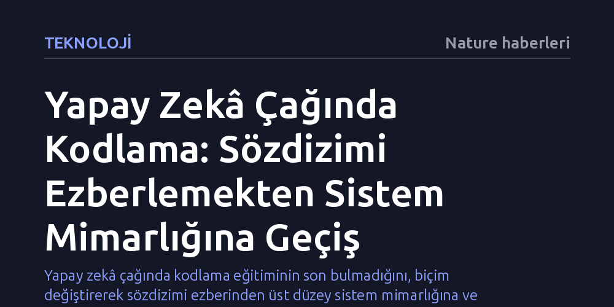

TEKNOLOJI · Nature haberleri · 2026-10-14
Yapay zekâ kod üretimini saniyelere indirse de araştırmacıların kodlama mantığını öğrenmesi hâlâ zorunlu. Ancak kritik beceri artık sözdizimi ezberlemek değil; yapay zekâyı modüler yapılar, standart veri düzenleri ve sahte verilerle denetleyen bir sistem mimarı gibi davranabilmek.
Yapay zekâ çağında kodlama eğitiminin son bulmadığını, biçim değiştirerek sözdizimi ezberinden üst düzey sistem mimarlığına ve denetçiliğe evrildiğini gösteriyor.

Deneysel tıp ve biyoloji gibi laboratuvar temelli alanlarda çalışan bilim insanları için hesaplamalı analizler her zaman aşılması güç bir engel olmuştur. Günlerce ekrandaki imlece bakıp çalışmayan bir betiğin neden çöktüğünü anlamaya çalışmak, teknik forumlarda kaybolmak ve tek bir eksik virgül ya da kapanmamış parantez yüzünden saatler harcamak, araştırmacıların en tanıdık çilelerindendi.
Gelişmiş büyük dil modellerinin ve otonom yapay zekâ araçlarının kullanıma girmesi bu tabloyu kökten değiştirdi. Eskiden haftalar süren hata ayıklama süreçleri ve karmaşık istatistiksel analiz boru hatları, artık birkaç yönlendirmeyle saniyeler içinde kurulabiliyor. Bu baş döndürücü hız, kaçınılmaz bir soruyu da beraberinde getiriyor: Yapay zekâ karmaşık analizleri ve kişiselleştirilmiş veri görselleştirmelerini anında üretebiliyorsa, bilim insanlarının kodlama öğrenmesine hâlâ gerek var mı?
Bu sorunun yanıtı tereddütsüz bir 'evet'; ancak öğrenmenin mahiyeti bütünüyle değişmiş durumda. Artık aşılması gereken darboğaz, programlama dillerinin katı sözdizimi ve dilbilgisi kurallarını ezberlemek değil. Asıl mesele, bilimsel sorulara doğru yanıtlar alabilmek için yapay zekâyı en etkili biçimde yönlendirebilmek. Kariyerinin başındaki araştırmacılar, bir anda kendilerini kıdemli bir yazılım mühendisinin pozisyonunda buluyor: Başkası—bu durumda yapay zekâ—tarafından üretilen kodu denetlemek, eleştirel gözle sorgulamak ve iyileştirmek.
Yapay zekâ destekli kodlamaya adım atan pek çok araştırmacı, yıllarca emek vererek edindiği teknik becerileri kaybedeceği endişesine kapılıyor. Veri kümelerini birleştiren, tabloları döndüren veya kümeleme yapan fonksiyonların sözdizimini unutmak ilk bakışta bir kayıp gibi görünebilir. Oysa kritik olan, bu yöntemlerin tam olarak hangi harf ve parametre dizilimiyle yazıldığını ezberde tutmak değil; söz konusu analiz yöntemlerinin varlığından haberdar olmak, kabaca nasıl çalıştıklarını kavramak ve hangi bilimsel probleme ne zaman uygulanacağını bilmektir.
Bu zihniyet dönüşümü, araştırmacıyı bir kod amelesinden ziyade sistem mimarı konumuna yükseltiyor. Fonksiyonların yeteneklerini ve sınırlarını belgelendirmelerden öğrenmek, yapay zekânın neyi nasıl yapması gerektiğini tasarlamak için fazlasıyla yeterli. Yazarın da vurguladığı gibi, bir sistem mimarı gibi düşünmek, araştırmacının "sözdizimsel ayrıntılarda boğulmadan sağlam ve tekrarlanabilir çözümlere yönelmesini" sağlıyor.
Önünüzde saniyeler içinde yüzlerce satır kod üretebilen bir yapay zekâ modeli olduğunda, kapılacağınız ilk cazibe tek bir 'mucizevi' betik istemektir: Ham veriyi alsın, temizlesin, istatistikleri çıkarsın ve yayına hazır bir grafik teslim etsin. Ancak bu monolitik yaklaşım son derece kırılgan ve temelden kusurludur. Tek bir değişken adı değiştiğinde veya yapay zekâ analiz hattının ortasında küçük bir halüsinasyon gördüğünde devasa kod kulesi bir anda yıkılır; araştırmacı da yüzlerce satırlık kod yığınının içinde hatanın kaynağını aramak zorunda kalır.
Bu felaketi önlemenin yolu modüler programlamadan geçiyor. Yapay zekâdan tek bir devasa program istemek yerine; yalnızca ham veriyi içe aktaran, yalnızca değerleri normalize eden ya da yalnızca görselleştirmeyi çizen küçük, bağımsız ve tek amaçlı fonksiyonlar talep edilmelidir.
Birbirine bağlı küçük bloklardan oluşan bir boru hattında hata ayıklamak çok daha kolaydır. Analiz adımlarından biri çöktüğünde tüm sistemi tehlikeye atmadan yalnızca sorunlu fonksiyon izole edilip düzeltilebilir. Üstelik bu modüler parçalar sonraki projelerde de aynen kullanılabileceğinden, araştırmacı zaman içinde yapay zekâ ile sınanmış güvenilir bir kişisel araç kütüphanesi inşa etmiş olur.
Kod yazmanın zahmetsiz hâle gelmesi, bir başka tehlikeyi de tetikler: Aşırı hızlı betik üretimi nedeniyle proje klasörlerinin sonu gelmeyen dosya çöplüklerine dönüşmesi. Ham verinin yanlışlıkla üzerine yazılması gibi yıkıcı hatalar, disiplinli bir proje yapısını zorunlu kılar. 'Cookiecutter Data Science' gibi standart çerçeveler, ham verilerin yalnızca okunabilir (read-only) ayrı bir dizinde, analiz betiklerinin ve üretilen çıktıların ise bağımsız klasörlerde tutulmasını şart koşarak araştırmacının orijinal verisini yapay zekâ kazalarından korur.
Yapay zekânın bilimsel süreçlere dâhil edilmesindeki en kritik etik ve yasal engel ise veri mahremiyetidir. Kamuya açık bulut tabanlı dil modelleri kullanıcı girdileriyle eğitilebildiğinden, sisteme aktarılan hassas hasta veya klinik verilerinin başka kullanıcıların ekranına sızma riski mevcuttur.
Bu riski sıfırlamanın yöntemi 'sahte veri' (dummy data) yaklaşımıdır. Araştırmacı, yapay zekâya gerçek verileri vermek yerine yalnızca sütun başlıklarını, veri tiplerini ve tablo boyutlarını içeren ama tamamen kurgusal değerlerden oluşan bir yapı sunar. Model kodu bu sahte veri üzerinde yazar, test eder ve hatalardan arındırır. Sorunsuz çalışan nihai kod daha sonra yerel ve güvenli ortama alınarak gerçek verilerle çalıştırılır; böylece yapay zekâ modeli hassas bilgiyi hiçbir zaman görmemiş olur.